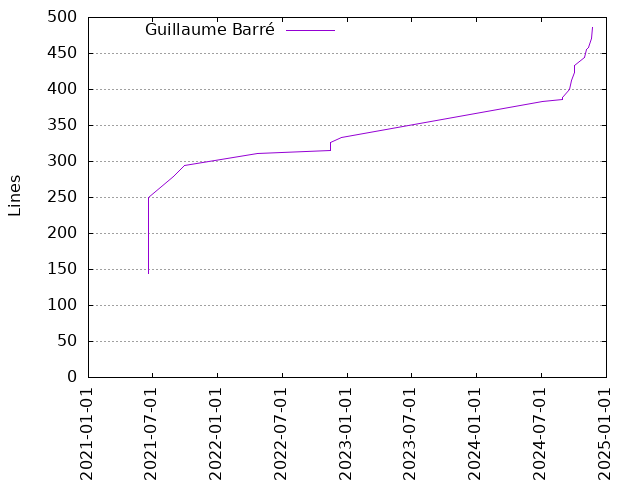
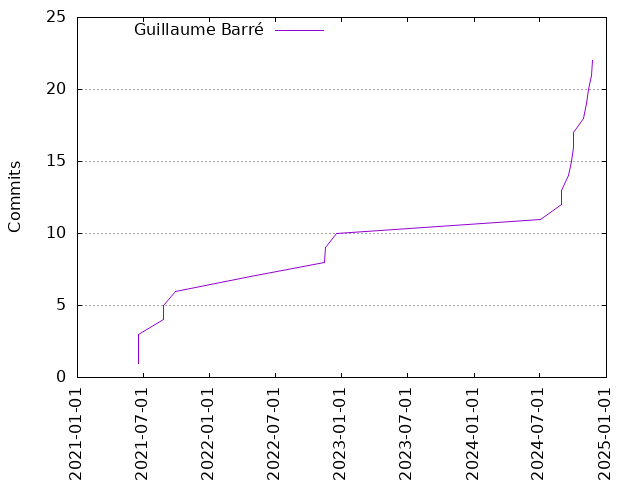

Authors
| Author | Commits (%) | + lines | - lines | First commit | Last commit | Age | Active days | # by commits |
|---|
| Guillaume Barré | 22 (100.00%) | 486 | 359 | 2021-06-18 | 2024-11-22 | 1252 days, 22:28:48 | 18 | 1 |


| Month | Author | Commits (%) | Next top 5 | Number of authors |
|---|
| 2024-11 | Guillaume Barré | 4 (100.00% of 4) | | 1 |
| 2024-10 | Guillaume Barré | 3 (100.00% of 3) | | 1 |
| 2024-09 | Guillaume Barré | 2 (100.00% of 2) | | 1 |
| 2024-08 | Guillaume Barré | 2 (100.00% of 2) | | 1 |
| 2024-07 | Guillaume Barré | 1 (100.00% of 1) | | 1 |
| 2022-12 | Guillaume Barré | 1 (100.00% of 1) | | 1 |
| 2022-11 | Guillaume Barré | 2 (100.00% of 2) | | 1 |
| 2022-04 | Guillaume Barré | 1 (100.00% of 1) | | 1 |
| 2021-09 | Guillaume Barré | 1 (100.00% of 1) | | 1 |
| 2021-08 | Guillaume Barré | 2 (100.00% of 2) | | 1 |
| 2021-06 | Guillaume Barré | 3 (100.00% of 3) | | 1 |
| Year | Author | Commits (%) | Next top 5 | Number of authors |
|---|
| 2024 | Guillaume Barré | 12 (100.00% of 12) | | 1 |
| 2022 | Guillaume Barré | 4 (100.00% of 4) | | 1 |
| 2021 | Guillaume Barré | 6 (100.00% of 6) | | 1 |
| Domains | Total (%) |
|---|
| ac-versailles.fr | 22 (100.00%) |
|---|